An AI assistant for finding the right ADU.
Choosing an accessory dwelling unit (ADU) means comparing layouts, understanding costs and checking what a property can accommodate.
I led the UX and visual design of an assistant for LiveLarge’s website. It helps visitors explain their needs, compare suitable models and move toward a lot review, while keeping their preferences in context as they browse.
- Client
- LiveLarge
- Partner
- VortexNet
- Role
- UX / Product Designer
- Scope
- Conversational UX, Visual Design & Prototyping
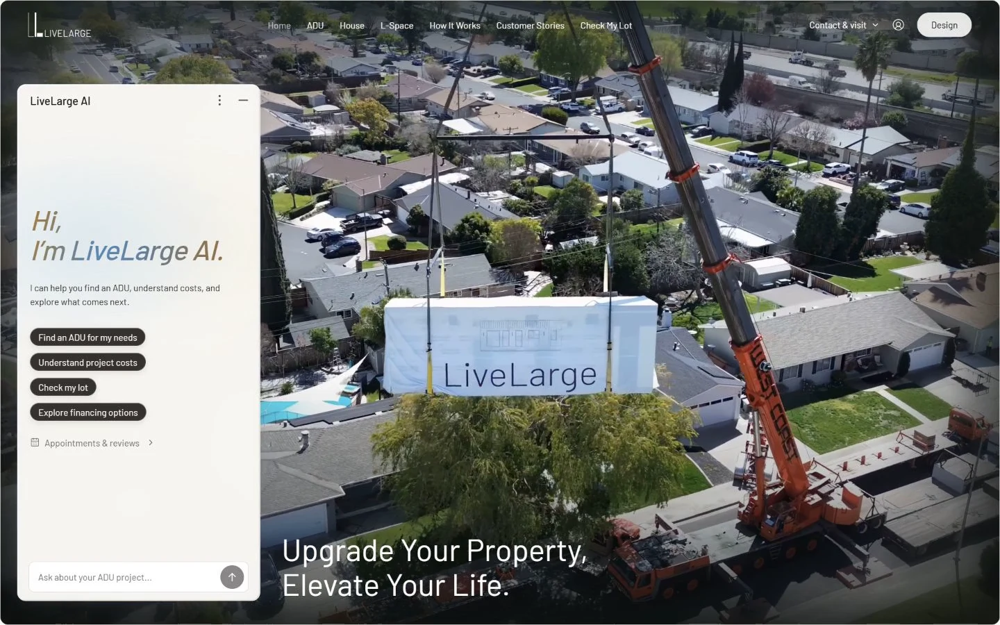
Highlights
A focused window into LiveLarge.
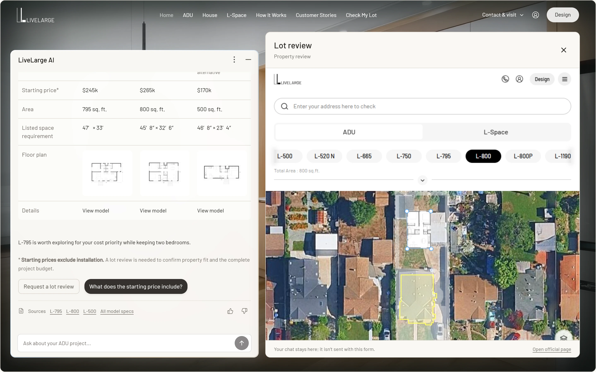
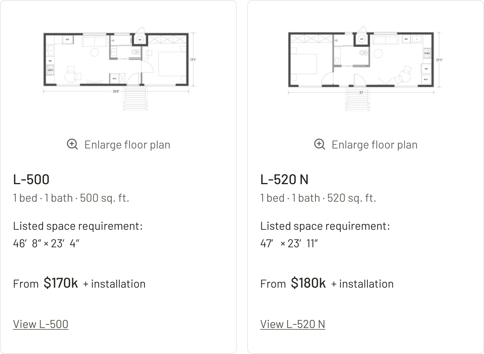
01 Reframe
Help people work through a major decision.
An accessory dwelling unit (ADU) brings together questions that the original site answered on separate pages: which home fits, what the project may cost, and what the property allows. I reframed the assistant as a guide through those connected decisions—carrying a visitor’s priorities across the site, making trade-offs legible, and handing property-specific answers to LiveLarge’s team.
The site I started with
These are LiveLarge’s original pages, before the AI assistant. I reviewed the route from browsing a home to checking a property, looking at what already worked and where a conversation could help connect the details.
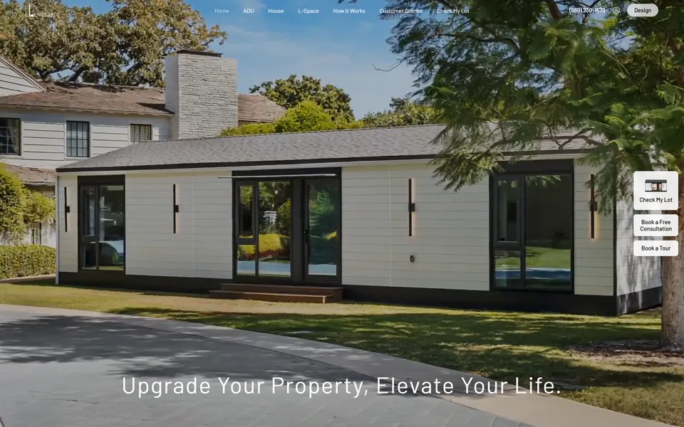
Keep the homes in focus.
The homepage already gave the homes a strong visual presence, with clear contact options. I wanted the assistant to support questions as they arose while keeping that browsing experience central.
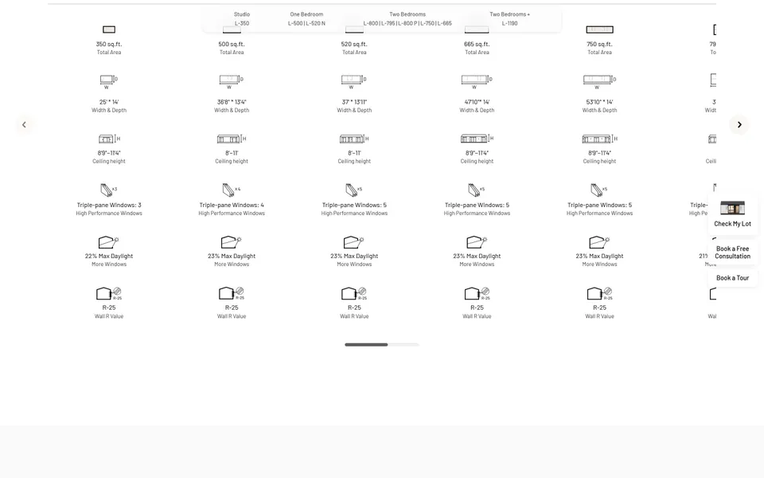
Make the differences relevant.
The specifications were available, but which differences matter depends on the household. I used stated needs to focus the comparison, while keeping the original details available.
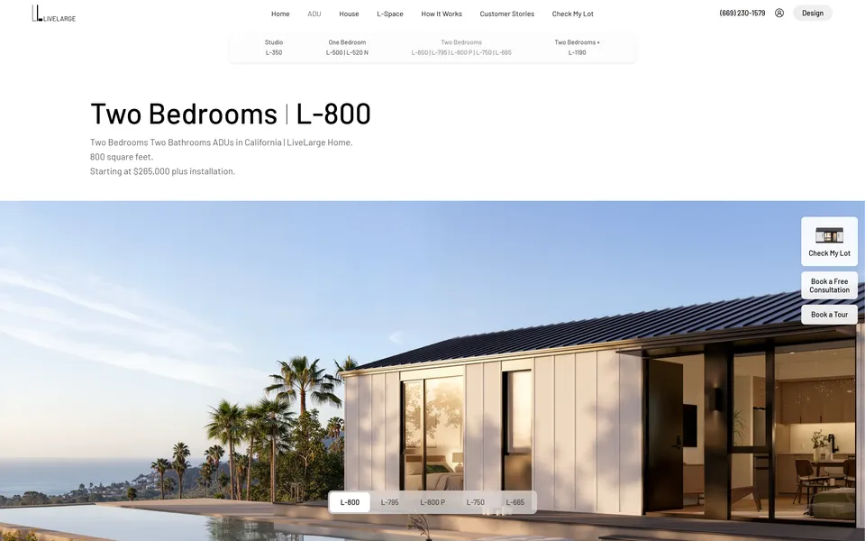
Carry a reason to compare.
A model page offered a closer look at one home. Moving to another changed the reference, but not necessarily the visitor’s priorities. I separated the current page from the needs held in the conversation.
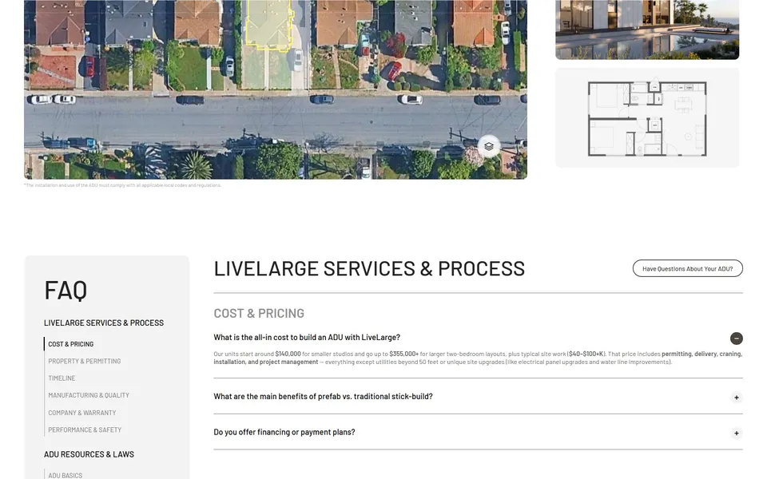
Put the cost boundary beside the price.
The fuller cost explanation lived in the lot-check FAQ. I brought installation and property qualifications into the recommendation so the starting price would be read in context.
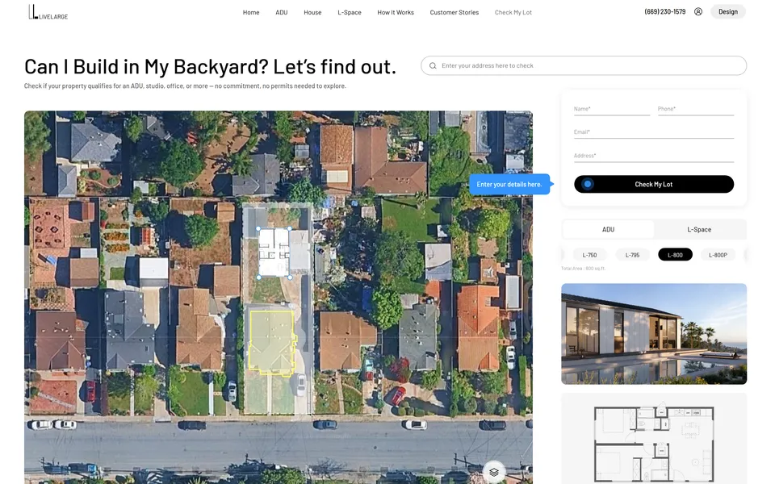
Build on the existing next step.
LiveLarge already had a property-check tool. I connected the assistant to that existing step so visitors could move from general guidance to a review of their own lot.
The challenge I took forward
My challenge was to help visitors work through questions about models, costs, and property requirements while keeping the homepage’s product content in focus. I designed the conversation to follow their browsing, retaining their needs as they moved into model details and property questions.
From separate pages to one connected conversation.
Before The visitor connects the information.
- BrowseHome / Models
- ExploreModel details
- CompareSpecifications / FAQ
- Next stepLot check / Consultation
With the assistant The same needs stay in view as visitors explore.
- BrowseAnswer in context
- ExploreKeep needs
- CompareCompare trade-offs
- Next stepGuide property review
02 Page and conversation context
Keep the conversation while the page changes.
“What about this one?” only makes sense if the assistant knows which home is on screen. The challenge was to follow the page without losing a visitor’s earlier needs. I kept the current model visible beneath the chat title and carried the conversation across pages, so each new view has the right reference and the household’s brief stays available.
- 2.2
Make the page reference visible.
I placed the model name below the chat title. A visitor can see which home the answer refers to before reading the reply.
- 2.3
Change the reference, keep the brief.
I let the viewing label follow the model on screen without rewriting earlier replies. Watch the page scroll to L-795: the reference changes, while the two-bedroom preference and budget question stay in the thread.
What about this one?
You’re now looking at L-795. It has 5 sq. ft. less area and a listed starting price $20k lower than L-800, before installation.
It keeps your two-bedroom preference while giving you another price point to consider. The layout and listed space requirement also differ. Compare how you would use the rooms. Property fit and the full project budget still need review.
2.4Let “this one” refer to the page.
The next reply names L-795 and compares it with L-800. I made the answer connect the visible model to the earlier bedroom and cost priorities.
What would happen next?
You can keep two-bedroom options open! LiveLarge’s process starts with an introductory call or virtual assessment, followed by a site visit.
Since budget matters to you, ask for a property-specific estimate before choosing a model. A lot review lets you provide the property details the team needs. If you’d rather experience the homes first, you can book a tour.
Request a lot reviewBook a tour2.5Carry the decision into the next page.
On How It Works, the reply still considers two bedrooms and budget. I kept those needs relevant when offering a lot review or a tour.
03 Clarify and recommend
Ask only what changes the answer.
A rental goal leaves several decisions open: upfront cost, living space and what can fit on the property. I made clarification depend on what is missing from the conversation. In this path, the assistant asks for a priority, then the bedroom count, before comparing relevant models.
- 3.2
Ask what matters before choosing a model.
“Rental income” can mean keeping the initial cost down or making room for more people. I surfaced those priorities as a small choice, instead of treating the goal as enough to recommend a home.
- 3.3
Ask the question that changes the shortlist.
After “Lower upfront cost,” bedroom count is still missing. I ask for it here because it changes which models belong in the comparison. A known preference should not be asked again.
Let’s keep two bedrooms in the mix! L-795 starts $20k below L-800, with two bedrooms and two bathrooms in both. Their layouts and listed space requirements differ, so the lower model price is only one part of the choice.
3.4Lead with a concrete trade-off.
L-795 starts $20k below L-800 while keeping two bedrooms. I put that difference before the cards, then align floor plans and space requirements so price has context.
L-795 is worth exploring for your cost priority while keeping two bedrooms.
Starting prices exclude installation. A lot review is needed to confirm property fit and the complete project budget.
Request a lot reviewWhat does the starting price include?Sources · L-795 · L-800 · All model specs
3.5Make the limit part of the recommendation.
The starting price excludes installation, and property fit still needs review. I placed that qualification beside the lot-review action so the next step follows the unanswered question.
A candidate to explore, with room for uncertainty.
My tone research shaped this revision: reassurance needed to come from useful guidance and clear limits. I softened “matches” because bedroom count alone cannot confirm property fit or the complete budget. I also removed the separate Edit needs control so visitors could revise their needs by replying.
Earlier · 14 September
“Matches” leads with a single known requirement.
Revised · Working prototype
The recommendation now states what is supported and what remains open.
04 Compare and verify
What comes after the shortlist?
A lower starting price can make a model worth considering, but it cannot tell a visitor whether that home will work on their property. I designed this transition around the questions still unanswered: keep the comparison available, open LiveLarge’s existing lot review alongside the conversation, and make clear that the chat is not sent with the form.
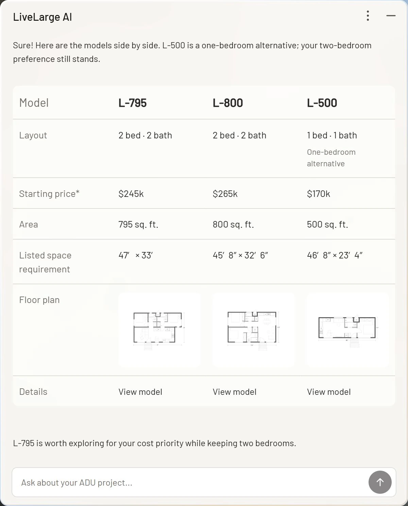
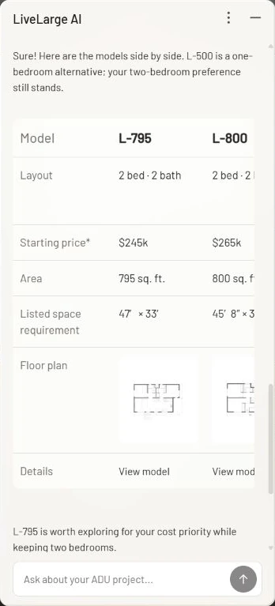
05 Visual design
An AI presence
that feels at home.
LiveLarge wanted the assistant to feel recognizably intelligent within a website led by its homes. I translated that brief into two expressive moments: the first greeting and the wait for a reply. In the working conversation, familiar typography and quiet surfaces let the model, the guidance and the next action take priority.
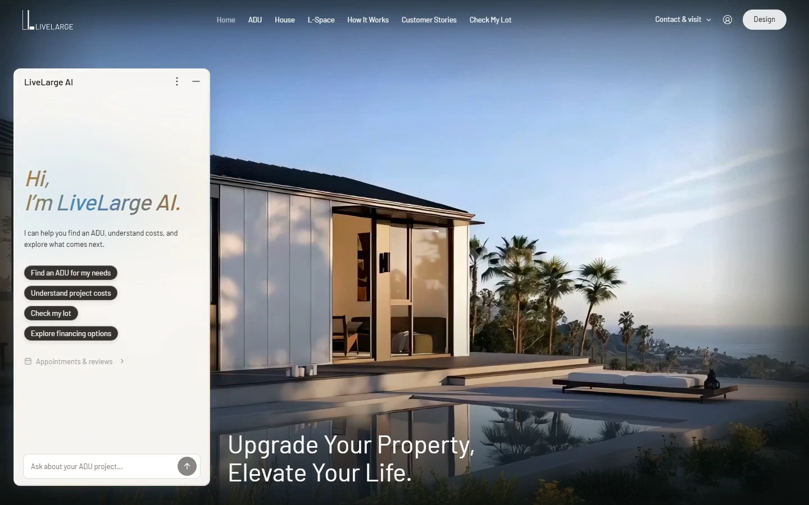
Base interface
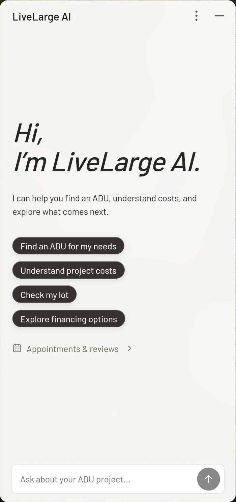
With AI effects
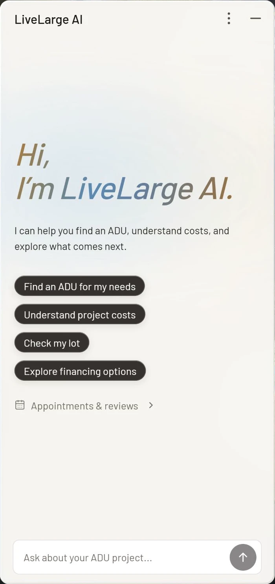
Give each visual element a job.
I kept the assistant in LiveLarge’s Barlow typography and neutral interface language. Color introduces it; a brief edge cue acknowledges a pending response. The message area settles back to a plain reading surface.
Familiar by default
Barlow, restrained controls and neutral surfaces connect the assistant to the website.
Color at the greeting
Blue and warm light mark the first encounter; they do not carry long-form answers.
Motion at the edge
A short-lived perimeter cue signals that the assistant is forming an answer.
Keep motion at the edge.
I wanted the assistant to feel responsive while keeping the conversation easy to read. I used a moving light along the panel edge while a reply is being prepared, then let it fade as the answer appears.
5.3 · Build the card around the decision
L-500 · Family · One bedroom
The home leads, followed by specifications. Starting price, installation wording and property qualification stay together.
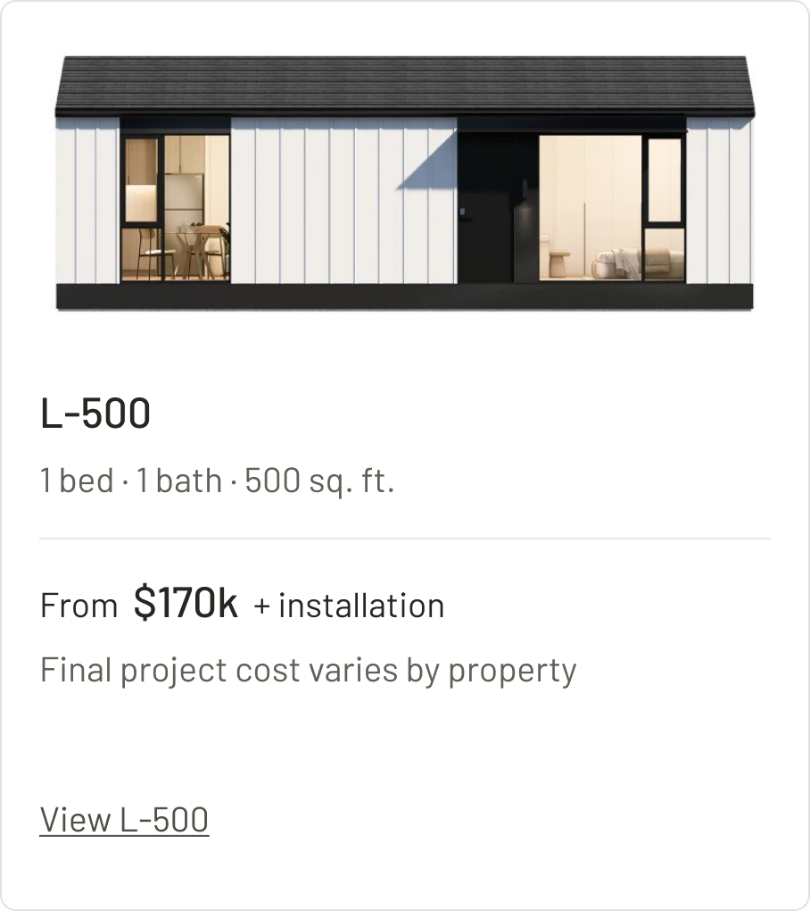
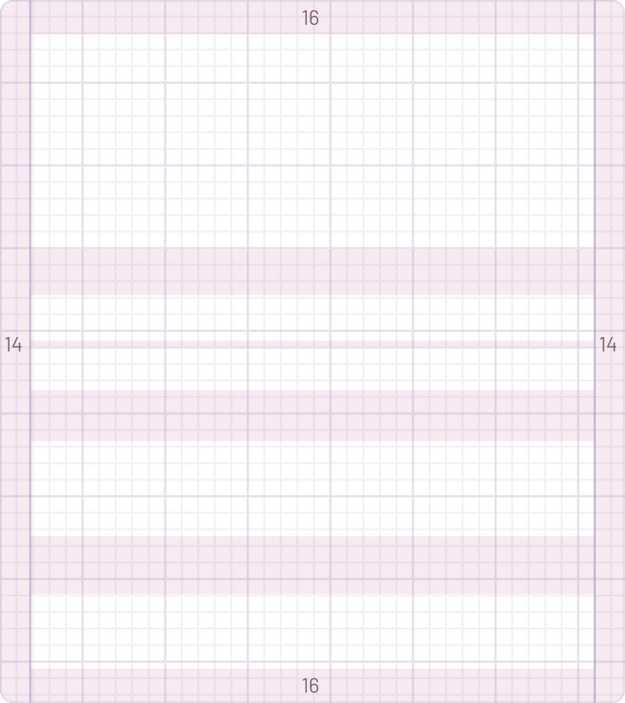
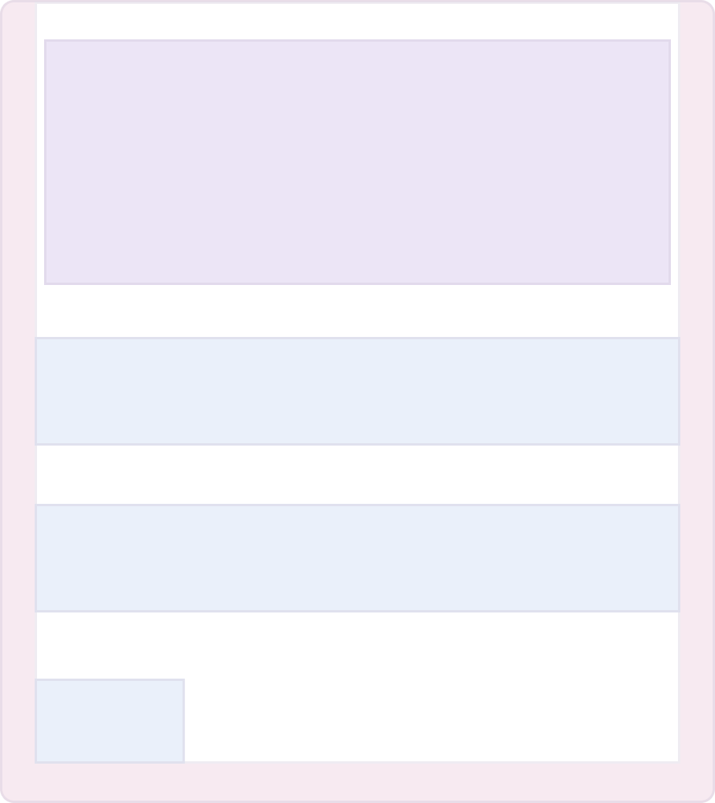
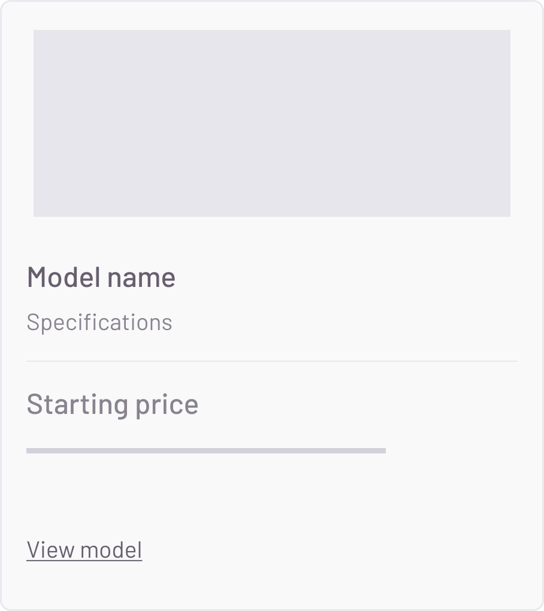
5.4 · Keep the same reading order
L-500 + L-520 N · One bedroom
I aligned the same information across both models: floor plan, specifications, starting price and link. This study isolates the card layout used in the one-bedroom comparison.
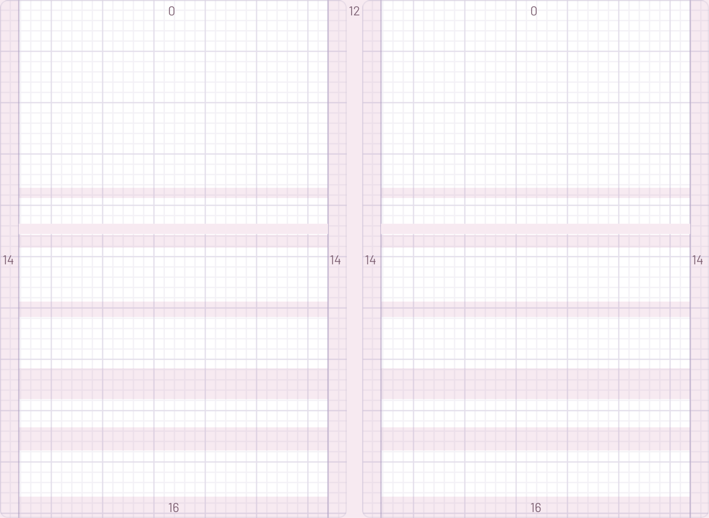
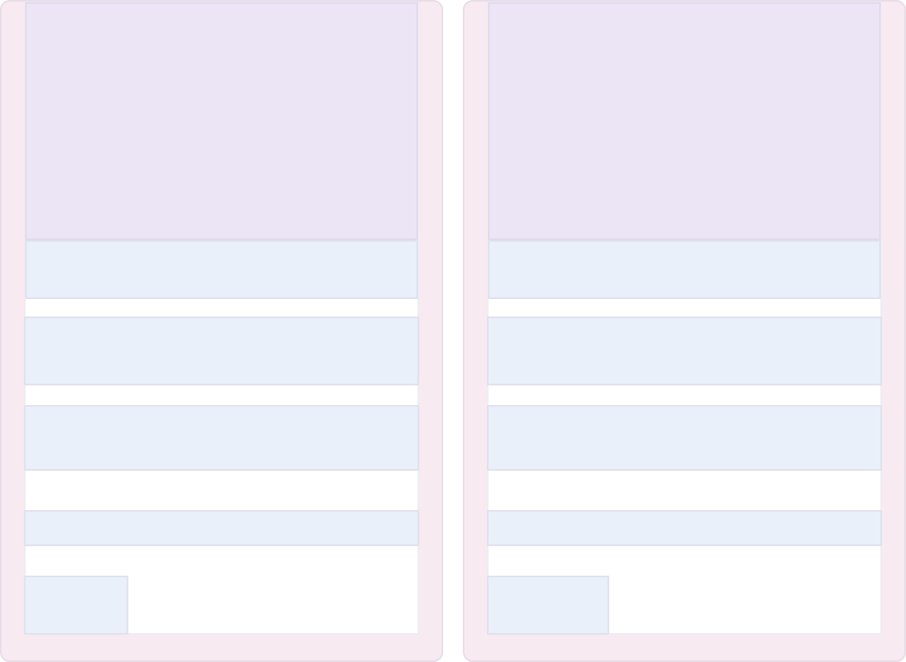
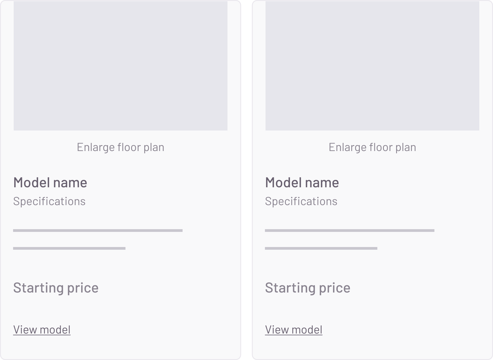
06 From design to working behavior
Make the design rules
visible in the prototype.
I translated the interaction design into briefs for coding agents, then checked the working prototype against the design. I used screenshots and recorded walkthroughs to inspect page context, conversation state and comparison layouts across desktop and mobile. These checks made the behavior concrete: what a new conversation clears, what minimizing preserves, and how much space a comparison needs.
A new conversation is still on the same page.
I explicitly separated conversation state from page context. Starting over clears the visitor’s previous messages and needs, but the assistant should still recognize the model currently on screen.
Hiding the window should preserve the work.
I specified that minimize only changes visibility. Reopening restores the thread, while comparison gets enough width to keep its content readable. These became concrete checks for the working build.
07 Outcome and design extension
A connected path
from interest to action.
The design received PM approval this sprint, and the team is now building the staging version.
Design extension
What changes when
the goal is rebuilding?
I explored how the same approach could help homeowners in Altadena clarify what they need and prepare for a lot review.
“I need to replace my main home. I might add a rental later. Where should I start?”
A path to discuss, with the open questions intact.
Keep the possibility of an ADU in view for a later conversation.
The company describes light steel framing and fire-resistant materials for its rebuilding offering.
Lot conditions, applicable requirements, project scope and a property-specific estimate.